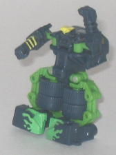
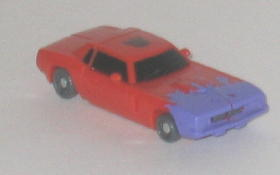

Difficulty of Transformation : Very Easy
Color Scheme : Dull yellow, black, and some dark purple, silver, and dull metallic teal
Individual Rating : 3.2
Allegiance
: Decepticon
Size
: Mini-Con (3-pack)
Overall Rating
: 6.8
 Dirt
Rocket
Dirt
Rocket
Difficulty of Transformation
: Very
Easy
Color Scheme
: Dull yellow, black,
and some dark purple, silver, and dull metallic teal
Individual Rating
: 3.2
Dirt Rocket is a dirt
bike, appropriately enough. The proportions in this mode are pretty good,
for the most part. The front of the bike seems a tad too wide, and the
front half's undercarriage is rather low (though this is partially to keep
the bike standing up in vehicle mode), but other than these two little
nitpicks the proportions look great. The mold detailing is fairly sparse,
however, especially when compared to most other Minicons. He does have
quite a few paint apps, though-- the purple "paint splatters" on the sides
look especially cool, and contrast fairly nicely with the yellow, in a
"loud" sort of way, which seems to be a running theme in the Dirt Digger
Team so it's likely intentional. (That said, yellow still is one of my
least favorite colors, and I think another main color would have looked
better on this toy.) The black and dark metallic teal also are nice contrasting
colors, though the fairly light-colored silver doesn't contrast very much
against the yellow, even if it is certainly appropriate on the tailpipes.
There are two Minicon ports on Dirt Rocket, one on each side slightly above
where the tailpipes begin.
As for Dirt Rocket's
robot mode, ugh, what a horrid mode. Honestly, I don't know if I have one
positive thing to say about it. The arms I guess are the best part, since
they look fairly well-detailed from the front, but they're rounded on the
front and flat on the back from a side view, and they're hollow on the
backside, so if you're looking at them from any angle except head-on they
look rather odd. Dirt Rocket's head looks absolutely ridiculous, having
a large plastic panel curving out from the top of the head, having the
motorcycle main body cover up the head from the sides, and having the chest
being as hollow as it is. The legs are some of the poorest excuses for
legs I've ever seen, and are barely even recognizable as legs of any sort--
they certainly are mostly feet, for one thing. The wheels on the feet also
make the toy extremely unstable, and it's nearly impossible to get Dirt
Rocket to stand up by himself. And, oh yeah, there's the fact that the
rear wheel and the tailpipe from the vehicle mode just jut out from his
back without folding onto his back to keep out of the way or anything.
As for Dirt Rocket's articulation, he can move at the shoulders (at two
points) and at the hips, but that's it.
Dirt Rocket has a pretty
good, if rather loud-colored, alternate mode, but there's pretty much nothing
good about his horrible excuse of a robot mode. Easily the worst mold of
the Dirt Digger Team.
 Grindor
Grindor

Difficulty of Transformation
: Very
Easy
Color Scheme
: Dark greenish gray,
dull jungle green, and some dull goldish yellow, green, and yellow
Individual Rating
: 8.5
Grindor is a monster
truck-- with some funky green "splattered" paint on his front hood to tie
him in with the others in the Dirt Digger Team. This mode, when it comes
to proportions, is probably the weakest of the team's, but considering
the other alt modes are near-perfect that's hardly a big downside. The
only real reason I saw this is the weakest is because of the very obvious
green hinges between Grindor's wheels, though this is required for the
transformation. Also, the robot fists are a little obvious fron a rear
view, but that's a pretty minor thing. The overall color scheme is pretty
good, with the light green providing a nice contrast to the dull greenish
gray. The yellow windows are a tad tacky, but the whole theme behind the
team is having tacky paint jobs, so there you go. He's also got a fair
amount of mold detailing-- the most in the team. Even the teeny tiny door
handles are molded in! Grindor has two Minicon ports, both on the bottom
of this mode, near the front of the vehicle.
Grindor has a fairly
original transformation for such a small toy, and the end result is a robot
mode that reminds me quite a bit of
Beast Machines
Blastcharge
, what with the large wheel-legs (which look great and fit
together well, too) and the shovel-like mouth. All in all, it gives the
toy quite a bit of personality. The upper arms look a little odd, given
that they're hollow and completely expose the ball joint, but that's a
minor quibble. There are no extras in this mode at all-- the driver's compartment
is on Grindor's upper back and stays out of the way completely, and everything
else is used in Grindor's main body. Grindor has pretty standard articulation
for a Minicon-- he can move at the shoulders (at two points) and at the
hips (at two points), but he can't move at the elbows or knees. (Granted,
he doesn't really HAVE any knees, but still.)
Grindor is an excellent
toy in both modes with a great color scheme, an original transformation,
and tons of personality in his robot mode. His obvious hinges in between
his wheels in vehicle mode are his only particularly noticeable flaw. One
of my favorite Minicons.
 Oil
Slick
Oil
Slick

Difficulty of Transformation
: Very
Easy
Color Scheme
: Dull orange and some
light purple, black, charcoal gray, and silver
Individual Rating
: 8.7
Oil Slick is an old-style
muscle car, and his vehicle mode is pretty much flawless-- there's no robot
extras whatsoever. The dull orange and light purple color scheme is certainly
very loud, but as I've said, it was definitely intentional for this set,
so I'm down with the hokey-ness of it for this team. The purple flame paint
apps do look rather cool, anyways. I do wish that the charcoal gray wheels
(and waist in robot mode) had just been a plain black color, however, as
that would have added to the contrast and just generally looked better.
The mold detailing is rather sparse on this toy, though part of it is just
because of the general smoothness of the surface of a muscle car, of course.
Oil Slick's Minicon port is on the underside of this mode, a little to
the rear of center.
I do heart Oil Slick's
robot mode. To get the only complaint I have about it done with right off
the bat, Oil Slick's heels are on the inside of his hollow feet, not the
outside, so he has a bit more trouble standing than I'd like. Otherwise,
this mode is pure love-- he has great proportions, and some big bulky arms
with what look like Swiss Army knives for hands. Combine that with the
"goggles" on his face, and he looks like some evil little surgeon. AWESOME.
He has no real car extras, with the exception of the car doors on his shoulders,
which accent the look instead of take away from it, in my opinion. Oil
Slick also has the best articulation out of the team-- he can move at the
shoulders (at two points), the hips, and the waist, and all of these are
on ball joints so they have a pretty good range of motion.
Oil Slick is a tacky-colored
muscle car with dorky goggles on his head and swiss army knives for hands.
In other words, he's near-perfect with a TON of personality. My favorite
of the Dirt Digger Team, and also joins his teammate Grindor as one of
my favorite Minicons of all time.
The Dirt Digger Team is my personal favorite out of all the Classics Minicon Teams. Dirt Rocket is horrid in robot mode (and makes the overall rating, which is an average of the three individual ratings, a bit lower than I'd like), but he's easily overshadowed by the awesomeness that is Grindor and Oil Slick, both of which are some of the best Minicon molds ever. If you get only one Classics Minicon Team, get this one.
Review by Beastbot